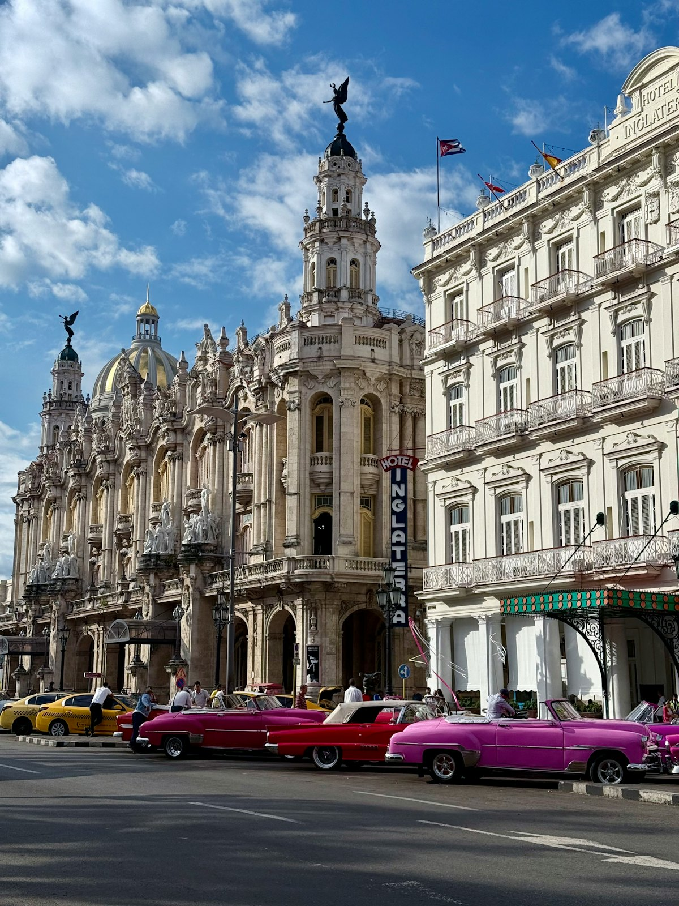
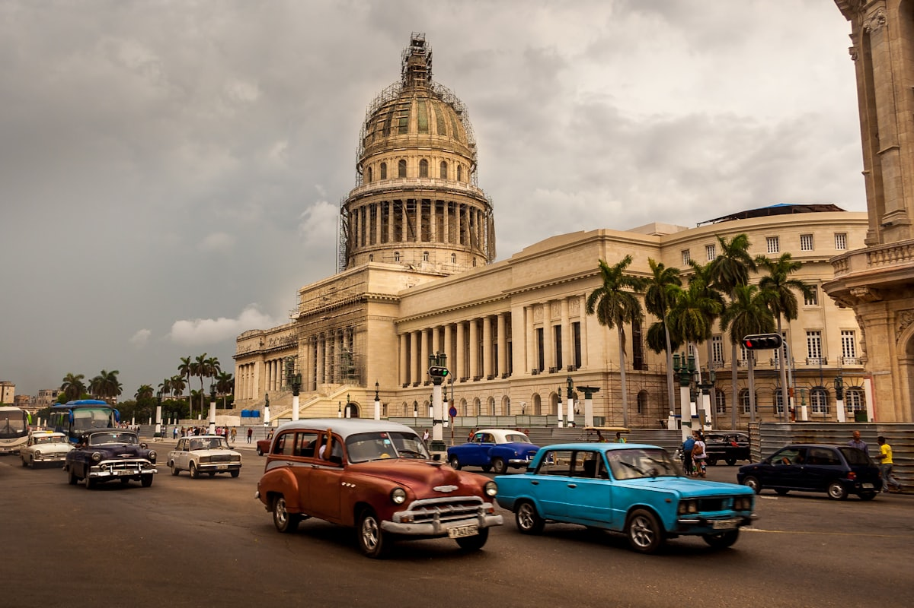
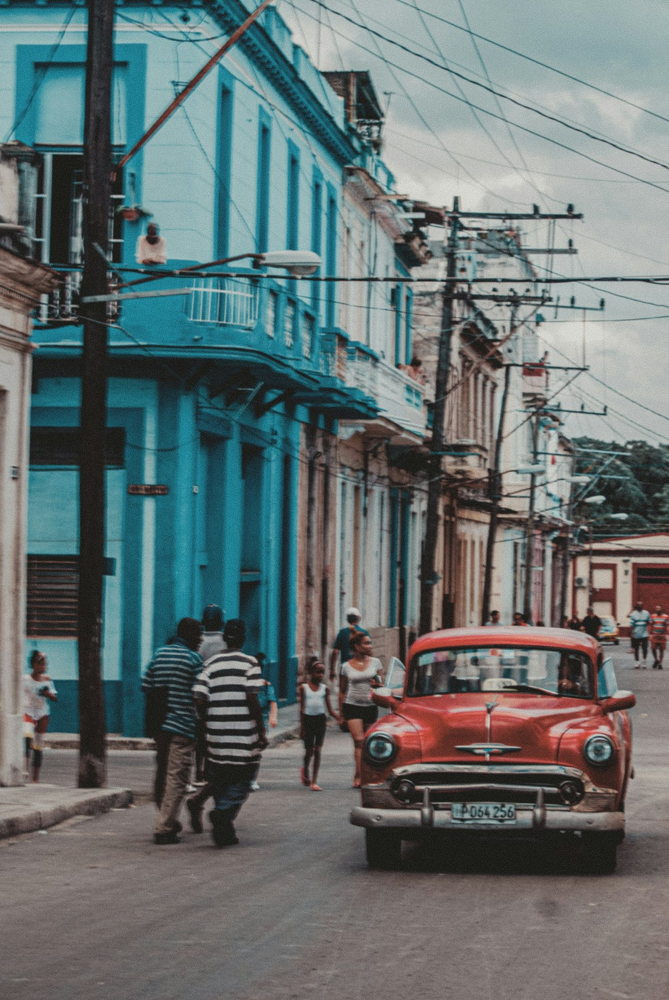
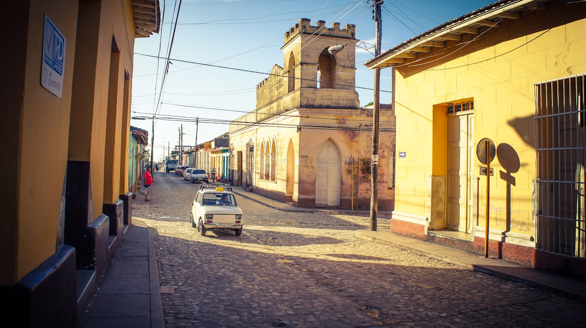
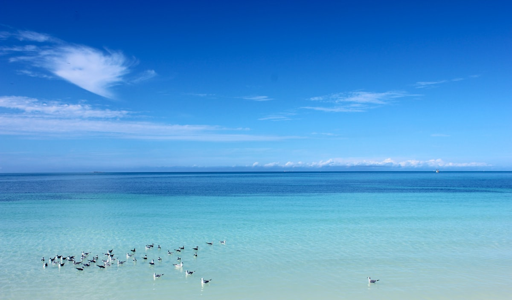
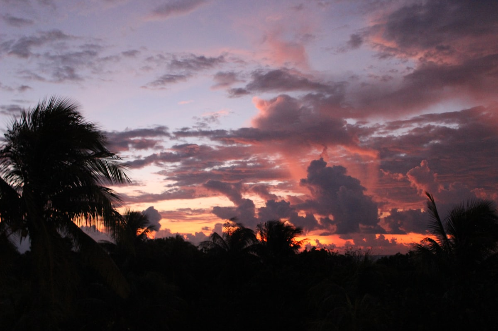
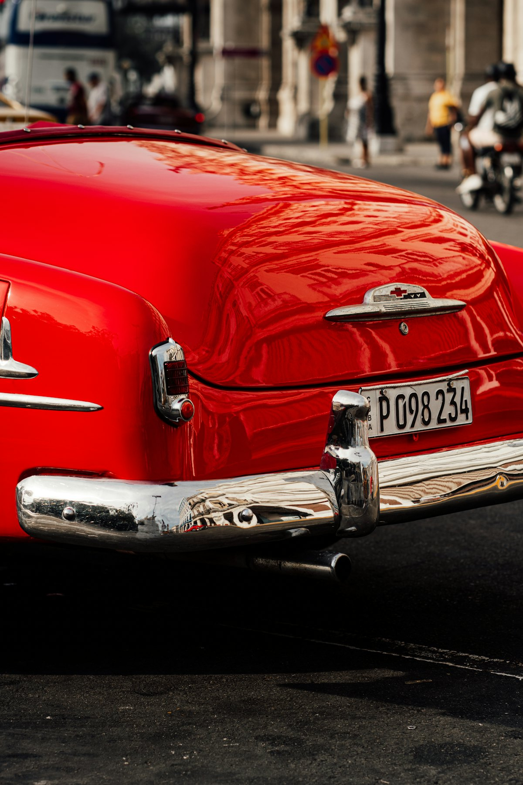

| 事项 | 结论 |
|---|---|
| 事项 | 结论 |
| 签证（最关键） | 中国护照免签，无需提前办；抵达时在机场柜台购买旅游卡（约 25 美元/欧元，现金支付），需出示返程机票与酒店订单 |
| 时差 | 比北京慢 13 小时（北京中午 12 点 = 哈瓦那前一日 23 点） |
| 电源 | 110V，A/C 型插座（两扁/圆孔），需带美标转换头 + 电压自适应充电器 |
| 货币 | 古巴比索（CUP）与美元/欧元双轨并存，现金为王，信用卡受制裁基本不可用；1 元 ≈ 3.1 古巴比索 |
| 推荐方案 | 哈瓦那 4 天（老城+老爷车+马雷贡）→ 特立尼达 2 天 → 巴拉德罗 2 天 |
| 行程链 | 北京 → 哈瓦那 → 特立尼达 → 巴拉德罗 → 哈瓦那 → 北京 |
| 预算（人均） | 经济 12000–18000 ／ 标准 22000–35000 ／ 舒适 45000–65000（人民币） |
| 三件提前事 | ① 订转机机票（无直飞）② 订哈瓦那老城 casa 民宿 ③ 现金换好美元/欧元，打印回程机票 |
以下为 8 天 7 晚的推荐节奏：哈瓦那深玩 4 天，大巴转场特立尼达住 2 晚，最后到巴拉德罗全包度假收尾。每日主景点 ≤2 个，跨城交通以 Viazul 大巴+拼车为主。
| 日期 | 行程 | 过夜地 | 主题 |
|---|---|---|---|
| D1 抵哈瓦那 | 北京✈哈瓦那（经墨西哥城/巴拿马转机约 20h+），机场买旅游卡入境，入住老城 | 哈瓦那 | 抵达+预热 |
| D2 | 老城四大广场徒步 → 国会大厦 → 帕塔加斯雪茄工厂 | 哈瓦那 | 老城人文 |
| D3 | 老爷车环城巡游 → 海明威故居 → 马雷贡海滨日落 | 哈瓦那 | 老爷车+文学 |
| D4 | 革命广场 → 哈瓦那大学街区 → 下午自由补充（博物馆/朗姆酒庄） | 哈瓦那 | 城市慢游 |
| D5 | 大巴转场特立尼达（约 4.5h）：马约尔广场 → 殖民老宅民宿 | 特立尼达 | 转场+古镇 |
| D6 | 特立尼达：罗曼蒂克博物馆 → 洛斯印海尼奥斯谷（智慧谷）小火车 | 特立尼达 | 殖民深度 |
| D7 | 拼车/包车到巴拉德罗（约 3.5h）：入住全包度假村，白沙滩浮潜 | 巴拉德罗 | 海滩度假 |
| D8 返程 | 巴拉德罗→哈瓦那机场（约 2.5h），✈转机回北京 | — | 收尾 |
以下为 8 天全程的逐小时执行时间线，可当作「当天打开照着走」的清单。标注 ※ 的可选项视体力与天气取舍。
| 时间 | 事项 |
|---|---|
| 全天 | 北京✈哈瓦那（经墨西哥城/巴拿马城/马德里转机，总航程约 20h+；中国无直飞，避开需美签的转机点） |
| 抵达 | 何塞·马蒂国际机场入境：柜台购买旅游卡（约 25 美元现金），出示返程机票+酒店订单，入境时可能抽查旅游保险 |
| 16:00 | 机场换少量现金（汇率略差，够打车即可），乘车进老城入住 casa 民宿（政府认证民宿） |
| 19:30 | 老城 Obispo 步行街晚餐，喝第一杯莫吉托，倒时差 |
| 时间 | 事项 |
|---|---|
| 09:00–11:00 | 武器广场（哥伦布故居、总督宫）→ 大教堂广场（哈瓦那大教堂、雨伞街） |
| 11:00–12:30 | 圣弗朗西斯科广场 → 老广场 Plaza Vieja，露天咖啡馆歇脚 |
| 13:00–14:00 | 午餐：老城龙虾饭或 Ropa Vieja（碎牛肉拌饭） |
| 14:30–16:30 | 国会大厦（可登顶俯瞰全城，约 10 美元）+ 革命博物馆（外观或入内） |
| 17:00–19:00 | 帕塔加斯雪茄工厂参观（提前订场次），晚上 Obispo 街夜景 |
| 时间 | 事项 |
|---|---|
| 09:00–11:00 | 乘坐 1950 年代老爷车环城巡游（约 1 小时，整辆约 50 美元，可讲价；沿海滨大道开最出片） |
| 11:30–13:00 | 海明威故居「瞭望山庄」Finca Vigía：写作塔楼、皮拉尔号游艇，海明威在此写下《老人与海》 |
| 13:30–14:30 | 午餐：五分钱小酒馆 La Bodeguita del Medio（海明威最爱的莫吉托） |
| 15:30–17:30 | 革命广场：切·格瓦拉与马塞奥巨幅壁画，哈瓦那大学街区漫步 |
| 18:30 | 马雷贡海滨大道 Malecón 看日落：钓鱼人、复古车流与海浪 |
| 时间 | 事项 |
|---|---|
| 09:00–11:00 | 革命广场（细看壁画与纪念碑），哈瓦那新区 Vedado 街区 |
| 11:00–13:00 | 哈瓦那大学（百年象牙塔）→ 柯契拉街市集，买手工艺品 |
| 13:00–14:00 | 午餐：古巴三明治 + 鲜榨果汁 |
| 14:30–17:00 | 自由补充：革命博物馆 / 朗姆酒庄参观（哈瓦那俱乐部） / 圣克里斯托瓦尔教堂钟楼 |
| 18:30 | 天台餐厅晚餐，老城夜景收尾 |
| 时间 | 事项 |
|---|---|
| 08:00 | 早餐后退房，前往 Viazul 大巴站（或约拼车 taxi colectivo） |
| 09:00–13:30 | 哈瓦那→特立尼达（Viazul 约 4.5h，约 25–30 美元；拼车约 30–40 美元/人，包车 120–150 美元/车） |
| 13:30 | 入住特立尼达殖民老宅民宿，午餐后石板路散步 |
| 15:00–17:30 | 马约尔广场 Plaza Mayor + 圣三一教堂 + 街边陶艺工坊 |
| 18:30 | 坎塔波广场（Cantáperro）晚餐，广场音乐现场 |
| 时间 | 事项 |
|---|---|
| 09:00–11:30 | 罗曼蒂克博物馆 + 考古博物馆（各约 100 比索）：殖民时期瓷器、家具与乐器 |
| 12:00–13:00 | 午餐：本地家庭餐馆（paladar），人均约 15–20 美元，尝烤乳猪 |
| 14:00–17:00 | 洛斯印海尼奥斯谷地（智慧谷）：坐窄轨观光小火车环线约 1h，看制糖厂遗址与瞭望塔 |
| 18:00 | 屋顶餐厅看日落，广场听萨尔萨现场 |
| 时间 | 事项 |
|---|---|
| 08:30 | 早餐后退房，拼车/包车前往巴拉德罗（约 3.5–4h，拼车约 30–40 美元/人） |
| 12:30 | 入住巴拉德罗全包度假村（All-Inclusive，含三餐酒水） |
| 14:30–17:00 | 20 公里白沙滩首滩：浮潜、沙滩排球，加勒比海水温 26°C+ |
| 18:30 | 全包晚餐 + 泳池边/沙滩演出 |
| 时间 | 事项 |
|---|---|
| 08:00–10:30 | 退房，乘车返回哈瓦那（约 2.5h） |
| 11:00–12:30 | 哈瓦那机场值机；雪茄（散装每人限带 50 支）、朗姆酒伴手礼 |
| 13:00 | 何塞·马蒂机场起飞，经转机回北京 |
| 落地 | 到家休息，时差 -13h，倒 2 天时差 |
必去（必去）/ 顺路（顺路）/ 可跳过（可跳过）。

必去
必去
必去
必去
顺路
顺路图片为 Unsplash 主题图（哈瓦那老城、老爷车、国会大厦、马雷贡、特立尼达、巴拉德罗等均为古巴实景），用于页面配图。更多免费景点：圣弗朗西斯科广场、革命广场、马雷贡海滨大道、老城四大广场。
点击左侧节点可在地图上定位；点击地图 marker 会高亮对应节点。坐标为 WGS-84 转 GCJ-02 纠偏后标注。
以下为单人、不含购物的估算，人民币计价；出发地基准北京。汇率按 1 元 ≈ 3.1 古巴比索估算。无直飞、转机机票占大头，全包酒店与 casa 民宿差价大，旺季（12–2 月）机票与巴拉德罗酒店整体上浮 20–30%。
| 项目 | 经济（12000–18000） | 标准（22000–35000） | 舒适（45000–65000） |
|---|---|---|---|
| 往返机票 | 转机往返 6000–8000 | 含接驳转机 8000–11000 | 商务/直挂 16000–22000 |
| 住宿（7 晚） | casa 民宿 120–200/晚 | 中档酒店 400–700/晚 | 全包度假村 1000–1800/晚 |
| 交通 | Viazul 大巴+市内 800–1200 | 大巴+拼车 1500–2500 | 包车/专车 4000–8000 |
| 门票 | 基础景点 300–500 | 含登顶/博物馆 600–1000 | 全含+演出 1500–2500 |
| 餐饮（8 天） | 街头+家庭餐馆 1200–2000 | 正常下馆子 2500–4000 | Fine Dining 6000–9000 |
哈瓦那延长 1–2 天，参加比尼亚莱斯山谷（Viñales）一日游：烟草种植园、石灰岩蘑菇山与烟草晾晒房，看最原汁原味的古巴田园。想雪茄文化的深度爱好者强烈推荐，哈瓦那市区有大量英文一日团可报。
哈瓦那 2 天压缩观光，其余 5–6 天全部交给巴拉德罗全包度假村：浮潜、帆船、SPA 一站式，全程不需换汇太多、不需要学大巴转场，适合不想折腾的家庭与蜜月客。
| 方式 | 时长 | 参考价 | 备注 |
|---|---|---|---|
| 转机（唯一方式） | 北京→哈瓦那 20–28h | 往返 6000–9000 元 | 经墨西哥城/巴拿马城/马德里/巴黎；国航经蒙特利尔需加拿大签证，避开美国转机（需美签） |
| 直飞 | — | — | 中国无直飞古巴航班 |
| 提醒 | — | — | 转机联程票一次买好（行李直挂），转机点停留时注意时差与签证政策 |
| 区域 | 价格/晚 | 优点 | 短板 |
|---|---|---|---|
| 哈瓦那·老城 | casa 150–300 / 标准 400–700 | 景点步行即达，殖民风情 | 老房隔音差，无电梯 |
| 哈瓦那·Vedado 区 | 标准 500–900 | 现代街区、使馆区安全 | 离老城约 15 分钟车程 |
| 特立尼达·古镇 | casa 100–200 / 精品 300–500 | 石板路古宅，天台餐厅 | 车难进，行李要拎 |
| 巴拉德罗·度假区 | 全包 800–2000 | 一价全含省心 | 旺季订满，提前 1 个月 |
| 圣克拉拉（途经） | 经济 150–250 | 切·格瓦拉主题 | 非必要不住 |